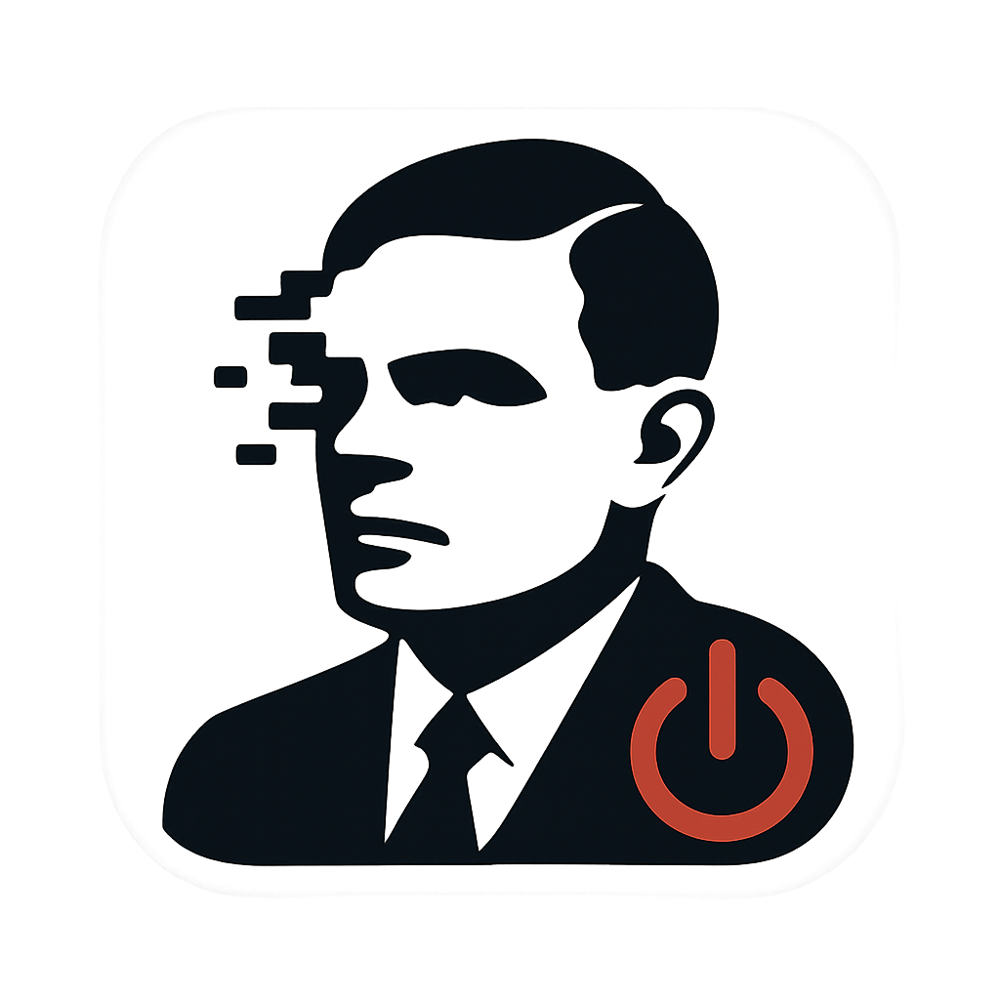

Access Denied by TuringOff!
You tried to access an AI tool, but TuringOff is here to help you hone your own formidable intellect!
Remember that delightful struggle of figuring things out yourself? It's character-building!
Don't worry, your brain probably needed the workout anyway. AI would just ruin all the fun of self-discovery.
"We can only see a short distance ahead, but we can see plenty there that needs to be done."
— Alan Turing